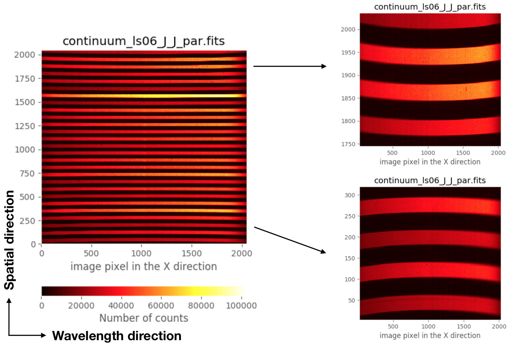

Understanding the data: image distortions¶
It is important to highlight that the raw spectroscopic images obtained with EMIR exhibit geometric distortions, specially noticeable near the borders of the spatial direction.
{kind=link}
The previous image corresponds to a continuum exposure where the even-numbered slitlets were opened, whereas the odd-numbered slitlets were closed. In this way it was easier to recognize the detector region spanned by each (distorted) individual 2D spectroscopic image corresponding to each particular slitlet.
In addition to that, it also important to keep in mind that the frontiers between diferent slitlets change as a function of the location of the slitlet (along the wavelength direction) in the focal plane of the telescope (i.e., the configuration of the slitlets in the Cold Slit Unit).
The described geometric distortion, as well as the wavelength calibration for each slitlet, have been modelled for any arbitrary configuration of the Cold Slit Unit (i.e., for any reasonable arrangement of the slitlets), using for that purpose a large set of continuum and arc calibration exposures. The calibration model can be easily employed to obtain a preliminary rectified and wavelength calibrated EMIR spectroscopic image without additional calibration images. This facilitates both the on-line quick reduction of the data at the telescope and the off-line detailed reduction of the data by the astronomer.
You can see an example of the variation of the slitlet frontiers when using different slitlet configurations in the following videos:
Video 1: Variation of the frontiers between slitlets 3 and 4 as a function of the location of the slitlets (along the wavelength direction) in the Cold Slit Unit, using grism J and filter J. The varying numbers at the top of the image indicate the location of both slitlets (in mm).
Video 2: Same as the previous video, but zooming in the frontier between slitlet 3 and 4.